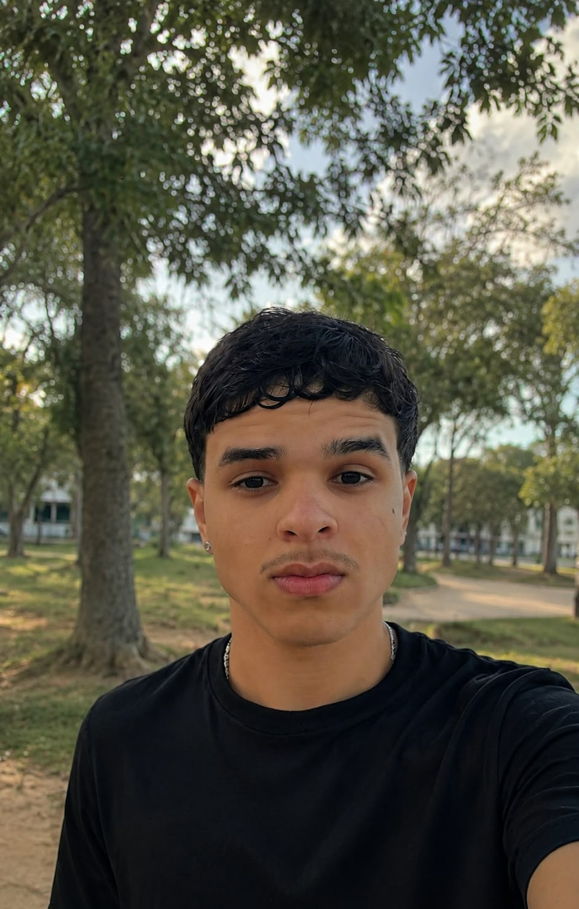
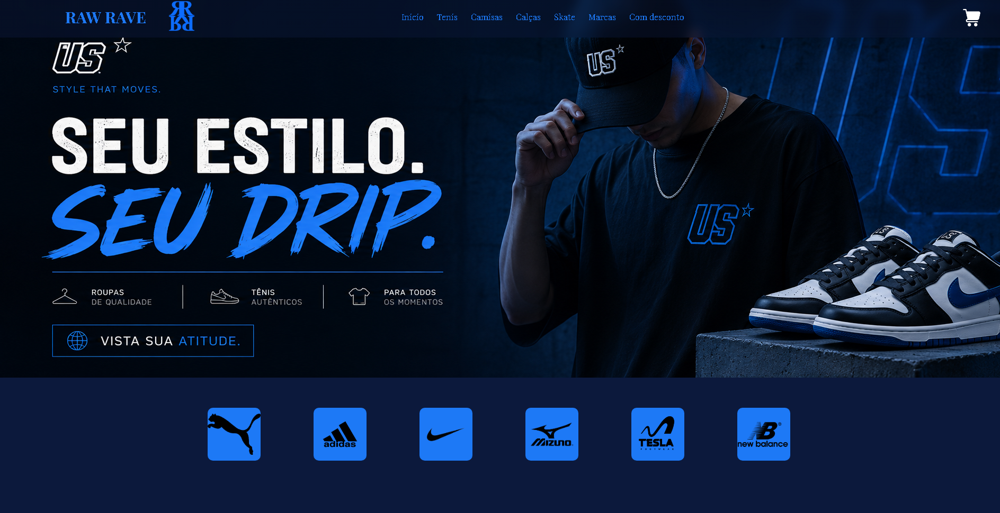
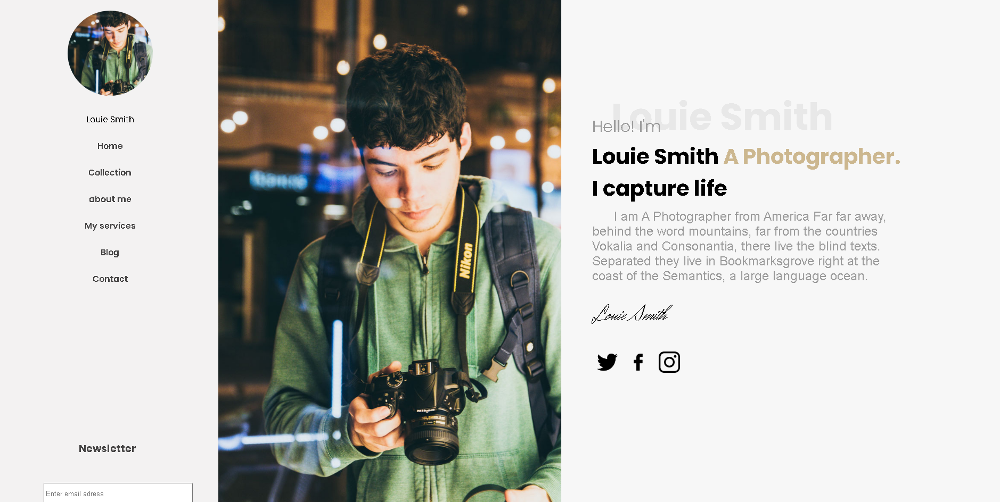
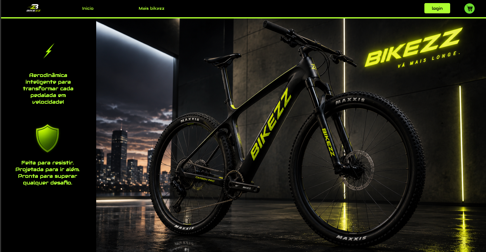
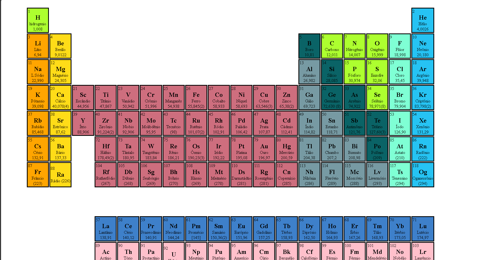
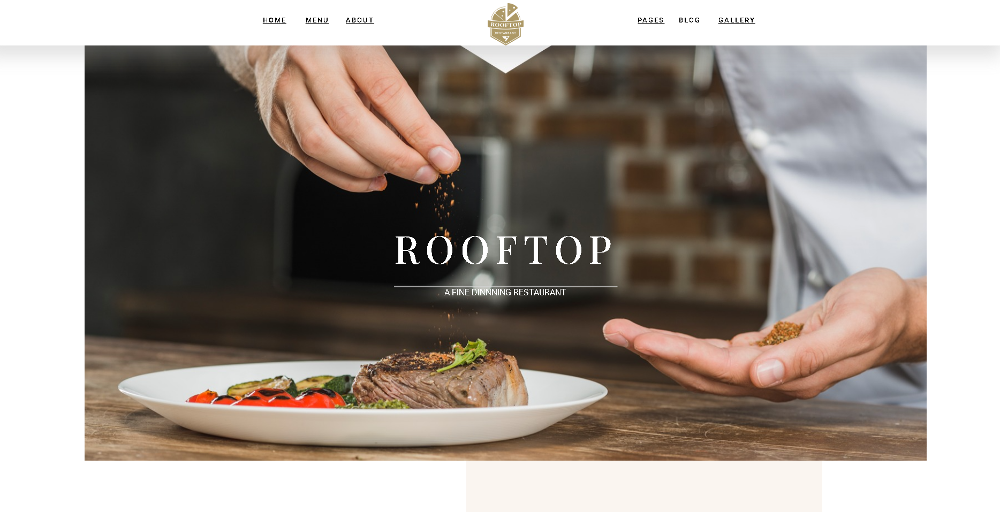

⌘
Suporte técnico
Auxílio na identificação de problemas em computadores, programas, impressoras e sistemas utilizados no ambiente de trabalho.
Diagnóstico
Atendimento
PORTFÓLIO PESSOAL
Sou estudante do ensino médio e faço um curso técnico na área de Tecnologia da Informação. Atualmente, trabalho com suporte de T.I. no Grupo Ferroeste, onde venho desenvolvendo meus conhecimentos em manutenção de computadores, programas, impressoras e sistemas internos. Gosto de aprender coisas novas, resolver problemas e entender melhor como a tecnologia funciona. Meu objetivo é continuar evoluindo profissionalmente, adquirir experiência e me preparar para novas oportunidades na área de tecnologia.

Estudante de Tecnologia da Informação
01 / SOBRE MIM
Tenho interesse pela área de tecnologia porque gosto de entender como os sistemas funcionam e encontrar soluções para problemas do dia a dia. Durante meus estudos e minha experiência profissional, procuro colocar em prática o que aprendo e ampliar meus conhecimentos.
Estou construindo minha base tanto em suporte técnico quanto em desenvolvimento. Sei que ainda tenho muito a aprender, por isso busco evoluir aos poucos, praticar com projetos e aproveitar as oportunidades que aparecem.
Além da parte técnica, considero importante saber conversar, trabalhar com outras pessoas, ter responsabilidade e manter a disposição para aprender algo novo.
02 / HABILIDADES
Conhecimentos que venho desenvolvendo nos estudos, nos projetos e na rotina de trabalho.
Auxílio na identificação de problemas em computadores, programas, impressoras e sistemas utilizados no ambiente de trabalho.
Conhecimentos sobre componentes de computadores, funcionamento do hardware e procedimentos básicos para identificar possíveis falhas.
Criação e organização de páginas para a internet, usando HTML para estruturar o conteúdo e CSS para trabalhar o visual dos sites.
Estudo dos fundamentos da linguagem para entender lógica, interatividade e funcionalidades em páginas web.
Prática com variáveis, condições, estruturas de repetição e pequenos programas para desenvolver o raciocínio lógico.
Estudo de bancos de dados e de comandos para consultar, inserir, atualizar e excluir informações.
Familiarização com a instalação, configuração e utilização de programas, além do apoio a usuários com dúvidas técnicas.
Comunicação, organização, responsabilidade, trabalho em equipe e disposição para pesquisar e aprender novas soluções.
03 / EXPERIÊNCIA
EXPERIÊNCIA PROFISSIONAL
Atuo na área de Tecnologia da Informação, tendo contato com a rotina de suporte e com os equipamentos e sistemas utilizados pela empresa. Essa experiência me ajuda a entender melhor como funciona o setor de T.I. dentro de uma organização e a colocar em prática os conhecimentos que venho adquirindo.
Ao lidar com situações técnicas do dia a dia, desenvolvo minha capacidade de observar problemas, buscar informações e aprender com as soluções encontradas. Também percebo a importância da organização, da comunicação e da responsabilidade para que o trabalho da equipe funcione bem.
04 / PROJETOS
Trabalhos que desenvolvi para praticar programação, organização de conteúdo e criação de interfaces.

01 / E-COMMERCELOJA VIRTUAL
Projeto de loja virtual com identidade visual própria e páginas para apresentar produtos, buscas, cadastro e contato.

onerror="this.style.display='none'; this.parentElement.classList.add('sem-imagem');"> 02 / PORTFÓLIOAPRESENTAÇÃO VISUAL
Página para organizar e apresentar fotografias, com atenção à disposição das imagens e à identidade visual.

03 / BICICLETASSITE TEMÁTICO
Site relacionado ao universo das bicicletas, desenvolvido para praticar a organização de produtos e informações.

04 / EDUCAÇÃOORGANIZAÇÃO DE DADOS
Representação visual dos elementos químicos, organizada para facilitar a identificação e a leitura das informações.

05 / GASTRONOMIASITE INSTITUCIONAL
Página para apresentar um restaurante e organizar informações de forma clara para os visitantes.
05 / CONTATO
Se quiser conversar sobre projetos, estudos ou oportunidades na área de T.I., use as informações ao lado ou envie uma mensagem pelo formulário.
O e-mail e o telefone são fictícios. Troque-os pelos seus dados antes de publicar o portfólio.